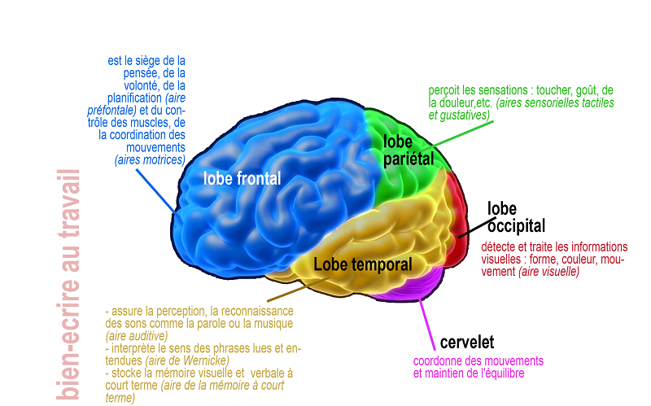
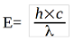
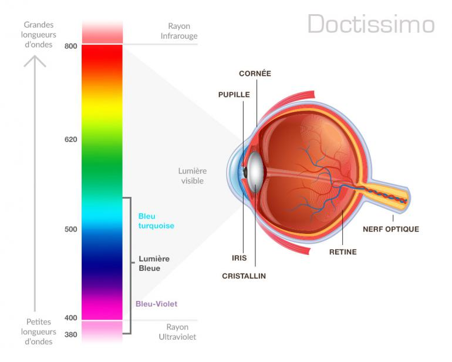

Nous avons vu dans le fonctionnement que le casque de réalité virtuelle peut être très complexe. Il peut alors avoir des effets indésirables qui sont plus ou moins importants.
Lorsqu'on mets un casque, une partie de nos sens sont retirés : en effet, la VR nous laisse uniquement la vision de la simulation du jeu. Or, dans la vie de tout les jours notre cerveau est stimulé par une importante quantité d'informations comme les distances, les espaces, le son, la vitesse de déplacement ou de pression, ou notre position dans l'environnement. Toute ces données sont en partie supprimées pour laisser place à une simulation lors du port d'un casque.
Notre perception est troublée, et des vertiges ou encore des nausées peuvent subvenir au bout d'un certain temps d'utilisation

Après, il y a un problème connu de tous dû aux écrans : la lumière bleue.
La lumière bleue est une des radiations lumineuse qui fait parti du spectre des couleurs visible. C'est la radiation la plus courte et qui renferme donc une plus grande quantité d’énergie d'après la formule : 
Donc plus le lambda est faible (400nm pour le bleu, plus la quantitée d'énergie est élevée).
Dans notre quotidien, la lumière bleue traverse l'atmosphère et entre en collision avec les molécules d’air ce qui provoque la diffusion de la lumière bleue partout. On obtient la couleur bleu du ciel.
Notre corps utilise la lumière bleue naturelle provenant du soleil pour réguler nos cycles de sommeil et d’éveil, aussi appelé cycle circadien. Elle empêche la production de mélatonine mais peut cependant avoir des effets bénéfique. (voir le site dans les ressources).

Les sources de lumière bleue artificielles viennent de tout nos appareils électroniques comme par exemple nos smartphones, télévisions, DEL d'appareils électriques, ...A cause de cet quantité d'énergie plus importante, le bleu fatigue plus rapidement notre œil, créant ainsi une fatigue oculaire avec des maux de tête. Avec un temps d'exposition long face à cette lumière bleue, la rétine peut être endommagée favorisant la dégénérescence maculaire (donc de la macula, qui comporte les photorécepteurs).